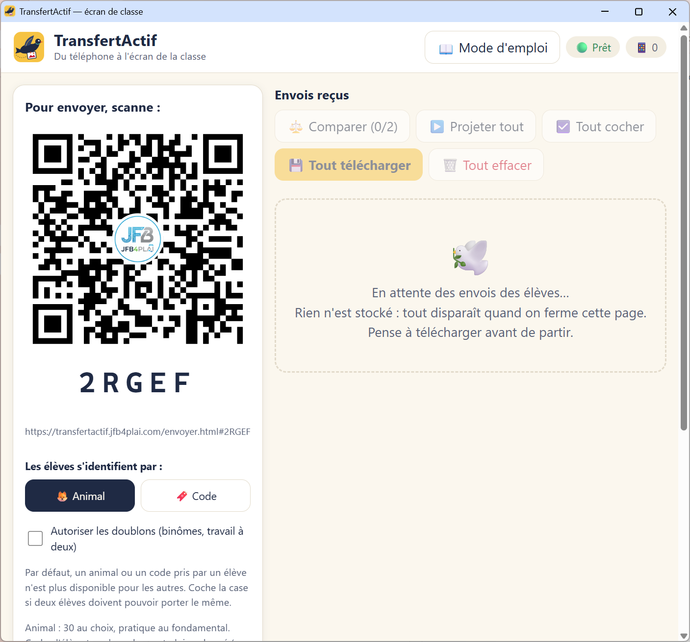
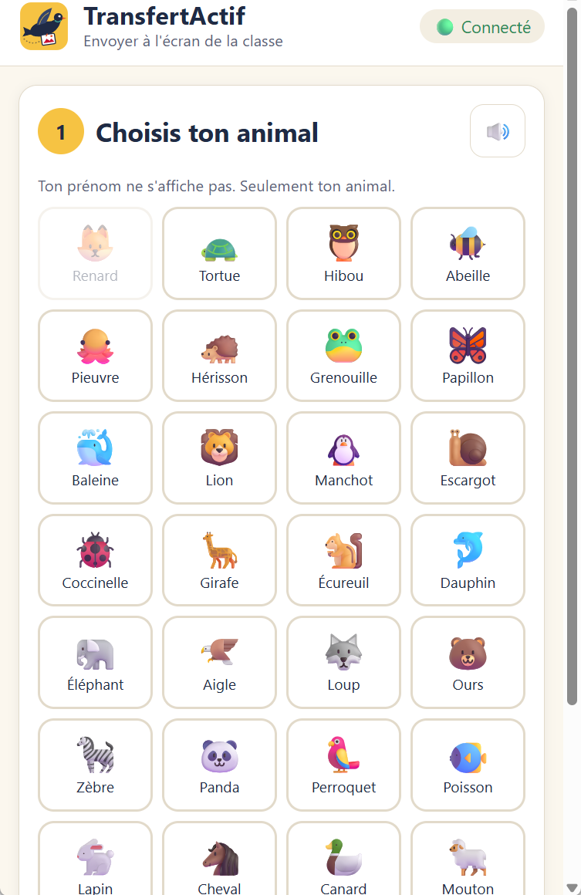
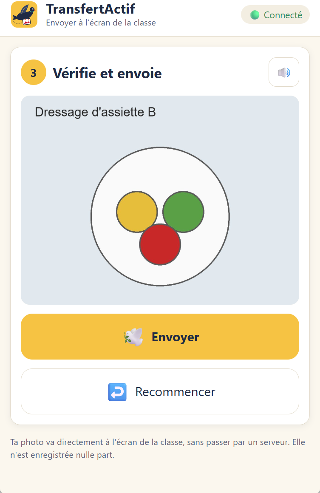
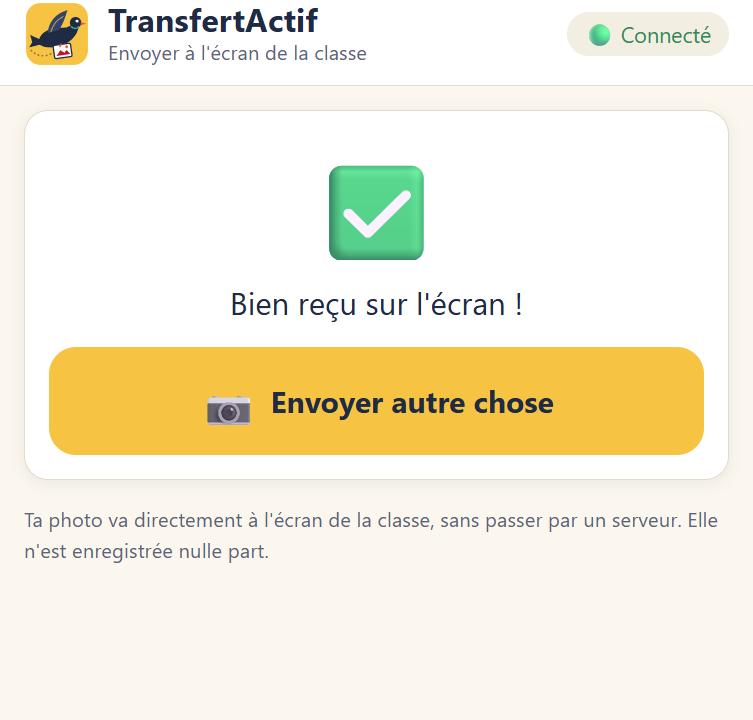
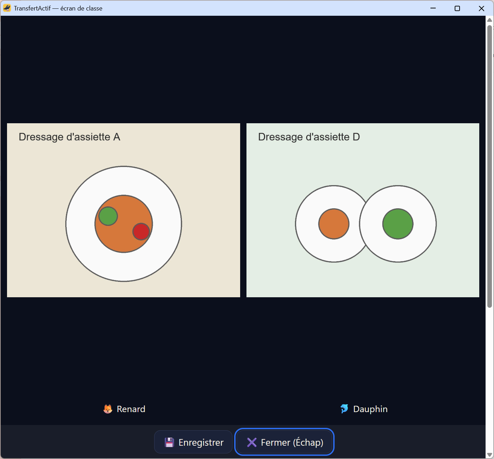
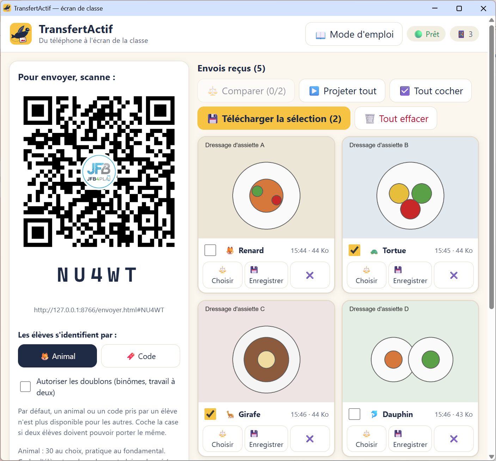
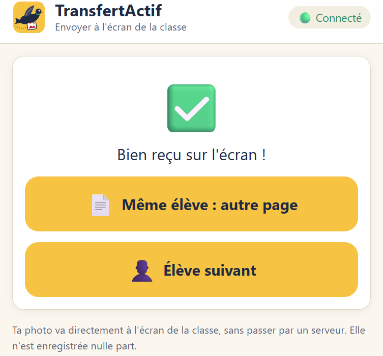
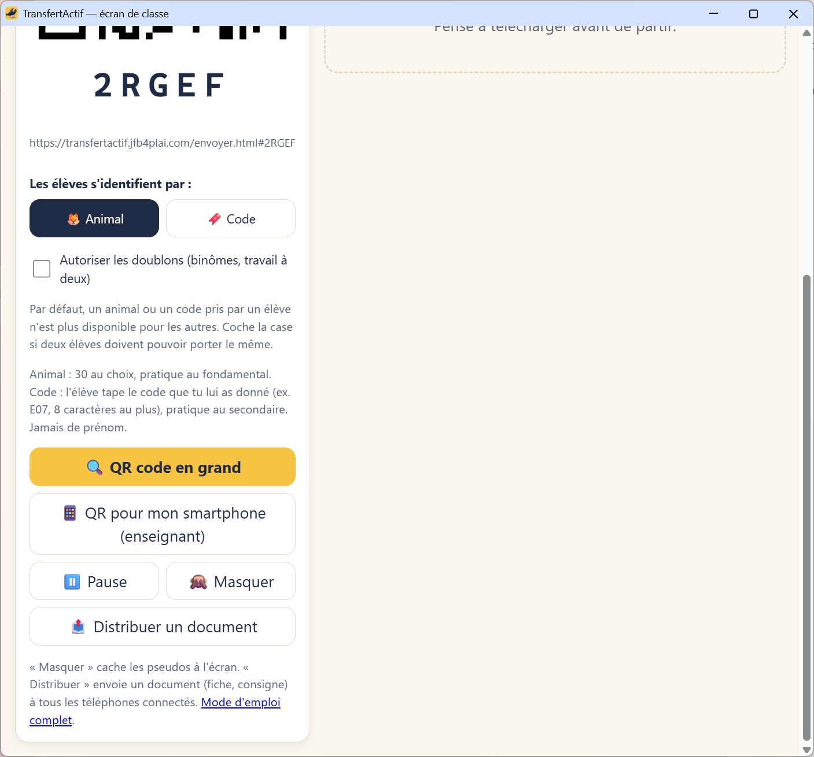
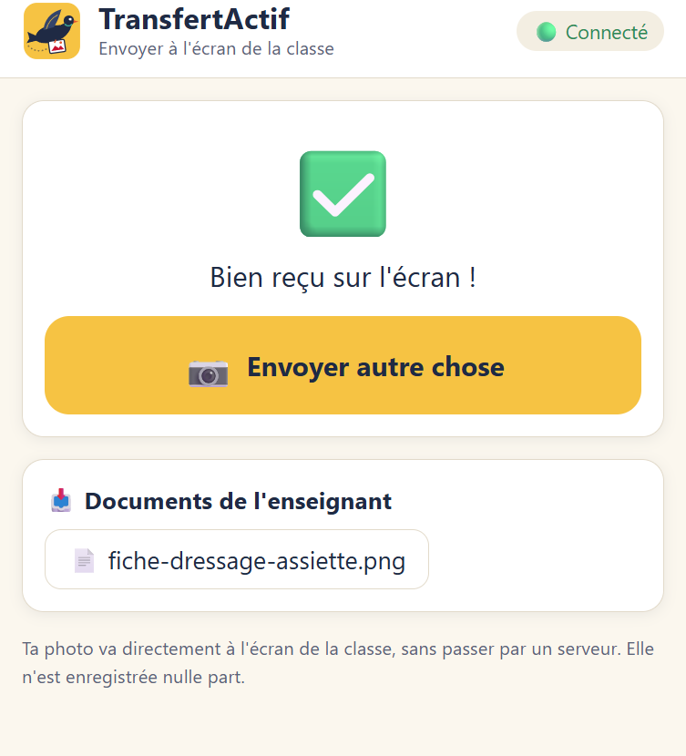
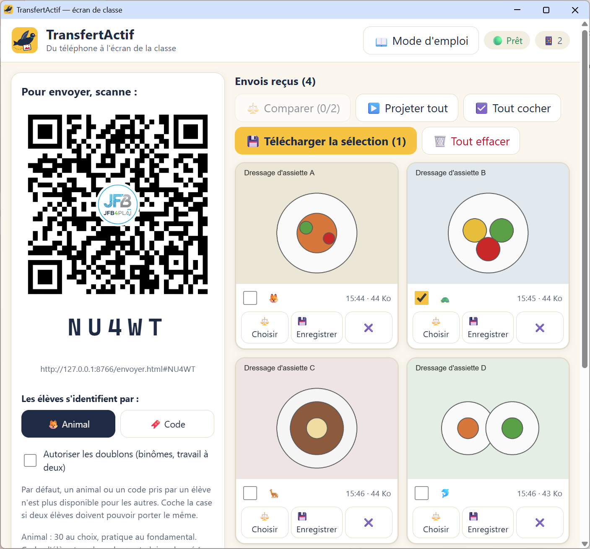

En 30 secondes
L'écran de classe affiche un QR code. Les élèves le scannent avec leur téléphone, prennent une photo de leur travail et l'envoient. Les envois s'affichent en galerie sur l'écran. Aucun compte, aucune installation, aucun fichier stocké sur un serveur.
Avant la séance
- Ouvrir la page TransfertActif sur l'ordinateur relié au projecteur ou au TBI.
- Attendre que la pastille en haut à droite affiche « Prêt ». Un code de 5 caractères et un QR code apparaissent.
- Cliquer sur 🔍 QR code en grand pour projeter le QR code à la taille du tableau.
Le code change à chaque ouverture de la page. Les élèves dont la caméra ne scanne pas le QR code peuvent ouvrir la page d'envoi et taper ce code de 5 caractères.
La pastille 📱 N indique le nombre de téléphones connectés.

Identifier les élèves : animal ou code
Chaque envoi s'affiche avec un pseudo, jamais avec un prénom. Choisir le mode avant de projeter le QR code :
- 🦊 Animal : l'élève choisit parmi 30 animaux. Convient au fondamental.
- 🔖 Code : l'élève tape le code que tu lui as donné (exemple : E07, 8 caractères au plus, lettres sans accent, chiffres ou tiret). Convient au secondaire, et au fondamental si tu préfères.
Un animal ou un code pris n'est plus disponible
Quand un élève a choisi « Renard », les autres élèves ne peuvent plus le choisir : le bouton est grisé. Pour un code déjà pris, la saisie est refusée avec un message.
L'identité se libère quand le téléphone ne donne plus signe de vie pendant environ 30 secondes (page fermée, téléphone verrouillé).
Autoriser les doublons
Cocher Autoriser les doublons pour un travail à deux : les deux élèves peuvent alors porter le même animal ou le même code. La case agit tout de suite sur tous les téléphones.
Si tu décoches la case alors que deux élèves portent déjà la même identité, l'un des deux sera refusé s'il recharge sa page. Il devra en choisir une autre.

Ce que font les élèves
À donner à l'oral ou à écrire au tableau :
- Scanner le QR code avec l'appareil photo du téléphone.
- Choisir son animal, ou taper son code.
- Appuyer sur « Prendre une photo ».
- Vérifier la photo : ni visage, ni nom.
- Appuyer sur « Envoyer ».
- Attendre le ✅ de confirmation.
Chaque consigne du parcours élève se lit à voix haute avec le bouton 🔊. La synthèse vocale est celle du navigateur du téléphone : rien ne part vers un service externe.
Avant l'envoi, la photo est réduite (2000 pixels au plus) et ré-encodée en JPEG. Ce traitement supprime les métadonnées de la photo, dont la position GPS du téléphone.


Le mur : projeter et comparer
Les envois arrivent en galerie, le dernier est mis en évidence. Sur chaque envoi :
- ⚖️ Choisir : sélectionner l'envoi pour la comparaison.
- 💾 : enregistrer cet envoi sur l'ordinateur.
- ✖️ : retirer cet envoi de l'écran (une photo qui montre un visage, par exemple).
Comparer deux productions côte à côte
- Cliquer sur « Choisir » sur deux envois. Le bouton « Comparer (2/2) » devient actif.
- Cliquer sur ⚖️ Comparer.
Si tu choisis un troisième envoi, le plus ancien choix est remplacé. Exemple d'usage : comparer deux dressages d'assiette, deux coupes ou deux schémas pour une mise en commun.

Projeter tout
▶️ Projeter tout affiche les envois un par un en plein écran. Naviguer avec les flèches ← et → du clavier, fermer avec Échap.
Télécharger les envois sur l'ordinateur
Les envois n'existent que dans la mémoire de la page. Sans téléchargement, ils disparaissent à la fermeture de la page.
- 💾 Tout télécharger : une archive .zip avec tous les envois (un fichier seul s'il n'y en a qu'un).
- Pour une partie seulement : cocher la case sur chaque envoi voulu (ou ☑️ Tout cocher). Le bouton devient « Télécharger la sélection (N) ».
- 💾 sur un envoi, ou « Enregistrer » en projection : un seul fichier.
Les fichiers s'appellent par exemple Renard_10h42_photo.jpg ou E07_10h42_photo.jpg : le pseudo et l'heure évitent que les photos de téléphone, toutes nommées « photo.jpg », s'écrasent. Un rang est ajouté en cas de doublon.
Le fichier arrive dans le dossier Téléchargements de l'ordinateur, selon le réglage du navigateur.

Envoyer les productions avec mon smartphone
Cas d'usage : tu photographies toi-même les cahiers ou les feuilles des élèves.
- Cliquer sur 📱 QR pour mon smartphone (enseignant) et scanner ce QR code avec ton téléphone. Ce lien est différent de celui des élèves.
- Choisir l'identité de l'élève : animal ou code, au choix à chaque fois.
- Photographier la production et l'envoyer.
- Choisir ensuite « Même élève : autre page » (plusieurs pages du même élève) ou « Élève suivant » (l'identité est alors oubliée, pour ne jamais attribuer un envoi au mauvais élève).
Ton smartphone n'est jamais bloqué par une identité déjà prise, et il n'en bloque aucune pour les élèves.

Distribuer un document aux élèves
C'est le sens inverse : de ton ordinateur vers les téléphones des élèves. Exemples : une fiche procédure, une consigne, un modèle de tableau.
- Attendre que les élèves soient connectés (la pastille 📱 indique combien).
- Cliquer sur 📤 Distribuer un document et choisir le fichier.
- Lire la confirmation : « envoyé à N téléphone(s) ».

Sur chaque téléphone apparaît une carte « Documents de l'enseignant » avec un lien de téléchargement, et la phrase « L'enseignant t'a envoyé un document » est lue à voix haute.

À savoir : le document part à tous les téléphones connectés à ce moment-là, sans choix possible d'un seul élève. Un élève qui se connecte après l'envoi ne le reçoit pas : cliquer à nouveau sur « Distribuer ». Taille maximale : 25 Mo.
Masquer les pseudos
🙈 Masquer cache le nom (le mot « Renard » ou le code « E07 ») sous chaque production, dans la galerie et dans la projection. Un second clic le ré-affiche.
Quand l'utiliser : avant de projeter le mur, pour commenter les productions sans désigner leur auteur.

À savoir : en mode Animal, le pictogramme (🦊, 🐢…) reste visible : les élèves reconnaissent encore leur animal. Pour un masquage complet, utiliser le mode Code : le pictogramme est alors le même pour tous (🔖) et seul le code disparaît. « Masquer » ne change que l'affichage : les fichiers téléchargés gardent le pseudo dans leur nom.
Pause
⏸️ Pause bloque les nouveaux envois sans fermer la page. Les élèves voient « Envois en pause ». Cliquer sur « Reprendre » pour rouvrir. Utile pour reprendre la main sur la classe.
Limites à connaître
- Rien n'est stocké. Fermer la page efface tous les envois. Télécharger avant de partir.
- Pas d'authentification. Quiconque voit le QR code peut envoyer. En cas d'envoi indésirable : « Pause », puis ✖️ sur l'envoi.
- 25 Mo par fichier, dans les deux sens.
- Réseau d'école filtré. La connexion est directe entre les téléphones et l'ordinateur, sans serveur relais. Sur un réseau très filtré, elle peut échouer : le téléphone de l'élève passé en 4G contourne le problème.
- Pas encore testé sur un large parc de téléphones réels ni sur le réseau d'une école. Faire un essai de deux minutes avec deux élèves avant la première séance.
- Captures d'écran. Les images de ce guide montrent des productions fabriquées pour l'exemple (dessins d'assiettes), pas des travaux d'élèves.
- Visages et noms. L'app rappelle « pas de visage, pas de nom » avant chaque photo, mais ne contrôle pas le contenu. Le bouton ✖️ permet de retirer un envoi.
Contact
Question, problème ou suggestion : jeanfrancois.beguin@ens.ecl.be